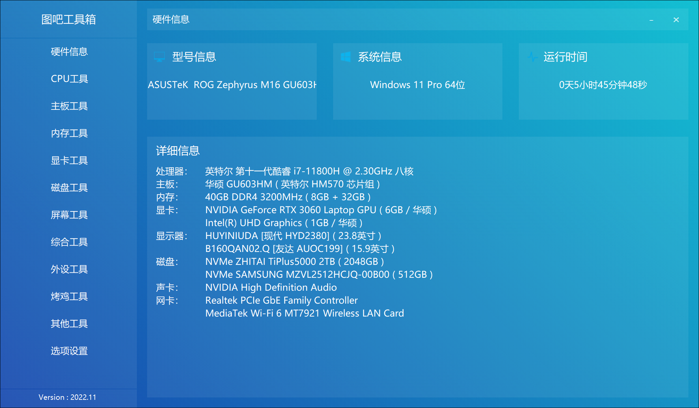

图吧工具箱简介
DIY爱好者的必备工具合。
软件作者：秃顶的小P孩
1、版本信息
软件版本：2022.11正式版R2
发布日期：2022年11月3日
程序大小：190.3MB（7z自解压压缩包）
工具箱下载：图吧工具箱2022.11绿色版自动解压程序R2
工具箱下载：图吧工具箱工具管理器

2、程序介绍
图吧工具箱，是开源、免费、绿色、纯净的硬件检测工具合集，专为所有计算机硬件极客、DIY爱好者、各路大神及小白制作。集成大量常见硬件检测、评分工具，一键下载、方便使用。
专业：专注于收集各种硬件检测、评分、测试工具，常见工具均有收集。
纯净 ： 无任何捆绑强制安装行为，不写入注册表，没有任何敏感目录及文件操作，无任何诱导、孔吓、欺乍等操作。
绿色 ：仅提供自解压格式的压缩包(可右键使用任意解压工具打开)，无需安装、注册等复杂操作，解压即可使用。用完可直接删除，无需卸载。
开放：群文件可直接下载源码，并提供硬件检测SDK，主流编程语言无门槛调用，且无需授权、免费使用无任何限制。
不忘初心，始于2014，持续8年稳定更新，坚持做能方便大家使用的硬件检测工具箱。
3、硬件检测引擎
功能：
图吧工具箱硬件检测引擎可以获取计算机硬件信息，例如处理器信息、内存信息、主板信息、显卡信息等。在您的软件项目中使用本引擎可瞬间将开发难度降低到难以置信的程度，即使您并不了解电脑硬件知识或并不会使用编程语言，也可以在极短时间内使用少于10行的代码量完成硬件检测部分的开发。
优势：
权限需求低：图吧工具箱硬件检测引擎是少数可以在Ring3权限下实现硬件检测功能的引擎之一，完全可以省去购置白名单驱动签名的麻烦。
极度轻巧：引擎文件大小控制在1-2MB之间，添加压缩壳后可进一步缩小至KB级别。
使用门槛低：提供动态链接库(.dll)与主流编程语言例程，部分编程语言仅需1行代码即可实现硬件检测功能。
数据库外置：可以单独更新数据库实现添加新硬件的支持，无需更新整个引擎。
免费授权：与主流SDK按时长收费不同，本引擎是完全免费的，下载即可使用。
作者的请求：
遇到BUG建议发送邮件到86738619@qq.com邮箱，也可以直接加QQ反馈(可能偶尔看不到消息)，如果能带着解决方法且经过作者验证可行之后可获得红包奖励。
说明：目前本引擎处于用爱发电状态，随时可能停更，可以的话欢迎捐赠支持引擎长期发展。
例程：
注：如果遇到问题，请仔细阅读例程说明文档，如果仍有疑问，建议发送邮件到86738619@qq.com邮箱，或直接加QQ说明问题(可能会看不到消息)。
易语言例程 · C#例程 · C++例程 · 目前作者正在准备Python例程 。点此载链接 (提取码f609)。
4、软件树状目录
├─data
├─List
├─skin
│ └─user
├─tools
│ ├─主板工具
│ ├─其他工具
│ │ ├─BatteryInfoView
│ │ ├─bluescreenview
│ │ ├─ChipGenius
│ │ ├─DesktopOK
│ │ ├─Dism++
│ │ ├─Everything
│ │ ├─Geek Uninstaller
│ │ ├─gifcam
│ │ ├─MicroKMS神龙版
│ │ ├─MSIAfterburnerSetup
│ │ ├─oem7
│ │ ├─procexp
│ │ ├─rufus
│ │ ├─ULTRAISO
│ │ ├─ventoy
│ │ ├─WinDbg
│ │ ├─Windows10数字权力激活
│ │ ├─三星win7激活工具
│ │ ├─其他win7激活工具
│ │ ├─图拉丁KMS
│ │ ├─天梯图
│ │ └─游戏加加
│ ├─内存工具
│ │ ├─memtest
│ │ ├─memtest64
│ │ ├─memtestpro
│ │ ├─Thaiphoon
│ │ ├─tm5
│ │ ├─内存整理
│ │ └─魔方内存盘
│ ├─处理器工具
│ │ ├─CoreTemp
│ │ ├─CPUZ
│ │ ├─iva
│ │ ├─LinX
│ │ ├─Prime95
│ │ ├─superpi
│ │ ├─ThrottleStop
│ │ ├─wPrime
│ │ └─XIANGQI
│ ├─外设工具
│ │ ├─AresonMouseTest
│ │ ├─Keyboard Test Utility
│ │ ├─MOUSERATE
│ │ └─鼠标单机变双击测试器
│ ├─常用工具
│ │ └─检查更新
│ ├─显卡工具
│ │ ├─AMD显卡驱动下载
│ │ ├─DDU
│ │ ├─GpuTest_Windows x64
│ │ ├─GPUZ
│ │ ├─nvidiaInspector
│ │ └─Nvidia显卡驱动下载
│ ├─显示器工具
│ │ ├─在线屏幕测试
│ │ └─色域检测
│ ├─烤鸡工具
│ │ └─FurMark
│ ├─硬盘工具
│ │ ├─ASSSDBenchmark
│ │ ├─ATTODISKBENCHMARK
│ │ ├─CrystalDiskInfo
│ │ ├─CrystalDiskMark
│ │ ├─Defraggler
│ │ ├─DiskGenius
│ │ ├─finaldata
│ │ ├─FlashMaster
│ │ ├─H2testw
│ │ ├─HDTune
│ │ ├─LLFTOOL
│ │ ├─mydisktest
│ │ ├─SpaceSniffer
│ │ ├─SSD utils
│ │ ├─SSDZ
│ │ ├─URWTEST
│ │ ├─windirstat
│ │ └─魔方数据恢复
│ └─综合检测
│ ├─AIDA64
│ ├─hwinfo
│ ├─HWMonitor
│ ├─OCCT
│ ├─RWEverything
│ ├─speccy
│ └─图拉丁硬件检测
└─新手指引
5、加群交流
欢迎各位加入图吧工具箱交流群，在群内不仅可以愉快的交流各种软件、硬件知识，共同学习、进步，甚至还能交♂友。点此一键加群，进群之后请遵循群规~